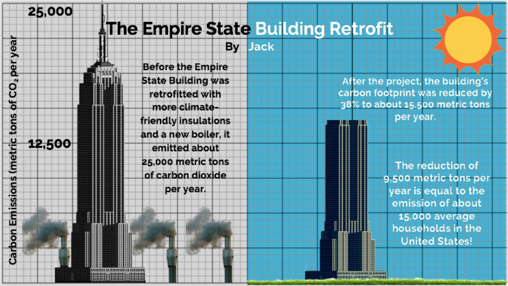
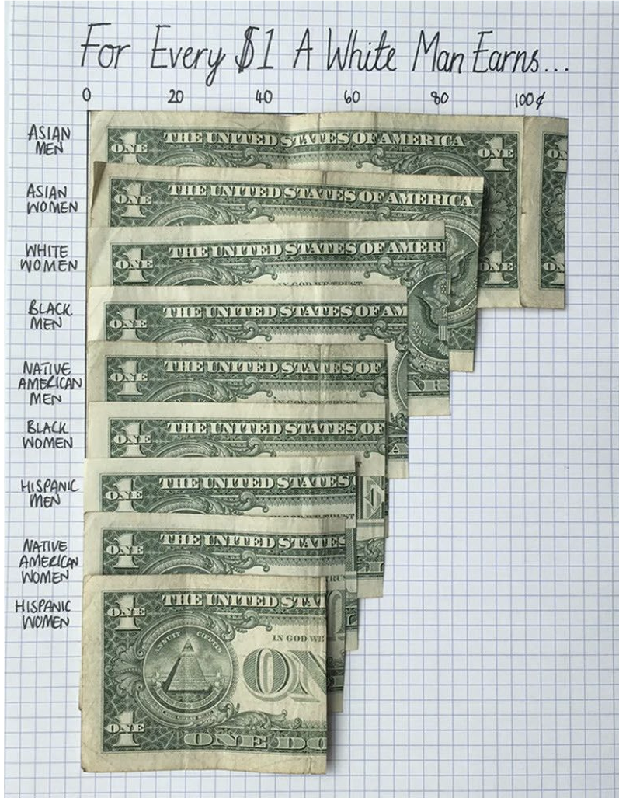
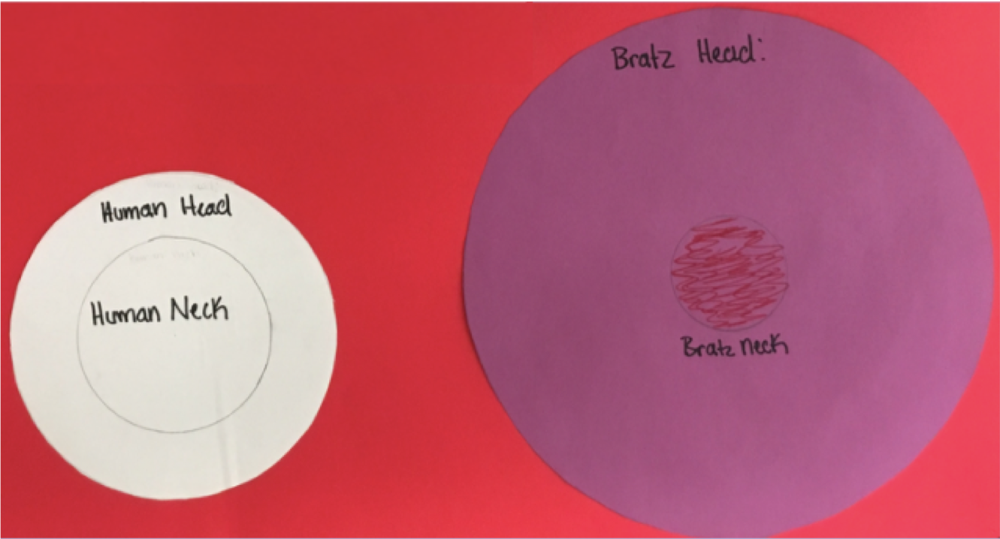
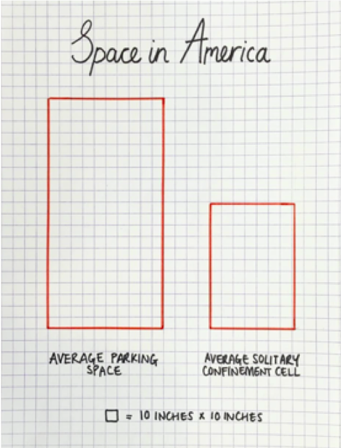

Students develop a ratio statement from a dataset of their choice, and then illustrate it via a compelling infographic.
The Assignment
Make an infographic from one of the bar or pie charts you made in Pyret.
Be sure to:
-
Make your representations to scale!
-
Give your infographic a compelling title. The title could read like a newspaper headline that guides the viewer to pay attention to the information you most want them to notice or it could be a question that you want the viewer to think about while looking at your infographic.
-
Credit your sources!
-
Review the Infographics Rubric before you start.
Brainstorming for your Project
-
Choose one data display that intrigues you.
-
Write three ratio statements of interest based on that display.
-
Share your ratios with your partner and discuss which one is most compelling and appropriate for making an infographic.
Strategy 1: Illustrate Ratios using Repeated Images
{kind=link}
{kind=link}
These examples were created by middle school students at Manhattan Country School.
Remember: All percentages are ratios!
40% is equivalent to 40 out of 100. If 40% of students wear baseball hats we can show 100 people, of which 40 are wearing hats. Or we could scale 40/100 down to 2/5 and show 5 people of which 2 are wearing hats.
Avoid Stereotyping!
A tricky thing about making infographics with images of people is that not all images accurately represent the diversity of the communities described by the statistics. We encourage the use of silhouetted images in infographics.
Strategy 2: Scale Images on a Grid, as if they were bars on a Bar Graph
 
{kind=link}
{kind=link}
1) Made by a 7th grader at Manhattan Country School. 2) Made by Data Designer Mona Chalabi
Strategy 3: Use an Area Model
 
{kind=link}
{kind=link}
1) Made by a 7th grader at Manhattan Country School. 2) Made by Data Designer Mona Chalabi
These materials were developed partly through support of the National Science Foundation,
(awards 1042210, 1535276, 1648684, and 1738598).  Bootstrap by the Bootstrap Community is licensed under a Creative Commons 4.0 Unported License. This license does not grant permission to run training or professional development. Offering training or professional development with materials substantially derived from Bootstrap must be approved in writing by a Bootstrap Director. Permissions beyond the scope of this license, such as to run training, may be available by contacting contact@BootstrapWorld.org.
Bootstrap by the Bootstrap Community is licensed under a Creative Commons 4.0 Unported License. This license does not grant permission to run training or professional development. Offering training or professional development with materials substantially derived from Bootstrap must be approved in writing by a Bootstrap Director. Permissions beyond the scope of this license, such as to run training, may be available by contacting contact@BootstrapWorld.org.